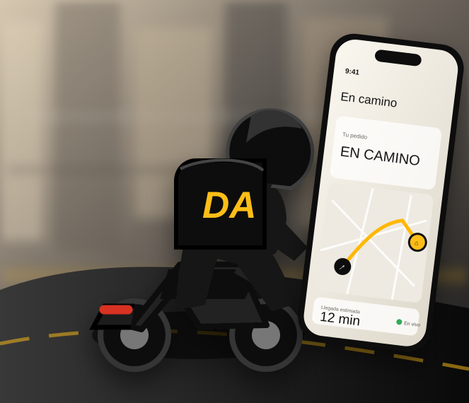

Comida
Restaurantes, cafeterías y consumo inmediato.
Una plataforma para conectar personas, comercios y repartidores bajo una operación de última milla medible, escalable y preparada para crecer.

Mercados iniciales
Restaurantes, cafeterías y consumo inmediato.
Abastecimiento cotidiano y comercio de cercanía.
Bienestar, higiene y productos esenciales.
Paquetes, documentos y logística urbana.
01 · Oportunidad
Es construir una capa operativa que coordine demanda, comercios y capacidad logística con reglas claras, datos trazables y productos diferenciados para cada actor.
Inventario, pedidos y entregas viven en sistemas separados o procesos manuales.
La oferta de reparto no siempre coincide con zonas, horarios y demanda real.
Clientes y operadores necesitan saber qué ocurre, quién responde y cuál es el siguiente estado.
02 · Ecosistema
Una experiencia directa para encontrar comercios, confirmar una compra y entender cada cambio de estado.
01Pedidos, catálogo, disponibilidad, preparación, promociones y lectura de desempeño.
02Ofertas transparentes, ruta activa, soporte y control sobre el ciclo de entrega.
03Control de operación, riesgo, zonas, incidencias y consistencia financiera.
0403 · Modelo
Participación sobre operaciones completadas, con reglas diferenciadas por categoría y acuerdo comercial.
Precio de entrega calculado según zona, distancia, demanda, prioridad y capacidad disponible.
Herramientas para comercios y empresas: analítica, operación avanzada, integración y soporte especializado.
Las cifras financieras, unit economics y proyecciones se incorporarán únicamente cuando hayan sido validadas y fechadas.
04 · Ventaja
La ventaja defensible no depende solo de una interfaz. Surge de conectar estados de pedido, disponibilidad comercial, capacidad logística y reglas operativas dentro de una misma arquitectura.
05 · Hoja de ruta
Narrativa, mercado objetivo, aliados y tesis comercial.
Identidad, pedidos, comercios, repartidores y administración.
Una zona, categorías limitadas y métricas operativas verificables.
Replicar capacidad solo después de validar economía y operación.
Presentación institucional